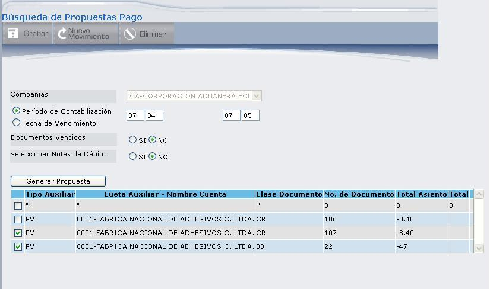

Nueva Propuesta
Los parámetros a ingresarse son los siguientes:
Compañía:
Despliega el código y nombre de la Compañía de la que desea extraer los documentos que van a ser cancelados.
Periodo de Contabilización:
Seleccione esta opción si desea desplegar los Proveedores pendientes de pago en el periodo que ingrese. El formato del periodo es el siguiente: aamm.
Fecha de Vencimiento:
Seleccione esta opción si desea desplegar los Proveedores con pagos vencidos.
Documentos Vencidos:
Este campo se despliega cuando se selecciona Periodo de Contabilización. Seleccione “SI” si desea extraer los documentos que para la fecha de selección de los pagos ya estén vencidos, seleccione “NO” si desea extraer todos los documentos sin importar si están vencidos o no.
Figura 3. Sub-detalle de Propuestas de Pago.
Seleccionar Notas de Débito:
Si se quieren extraer los documentos que tienen saldo positivo, estos documentos se restan del importe a pagar al Proveedor. “SI” significa que se van a extraer los documentos con saldo positivo, “NO” significa que no se extraerán. Si esta opción se selecciona como positiva (SI) y en la extensión de los archivos de compañías y/o Proveedores se ha parametrizado un pago para documento, no tomará en cuenta las notas de débito ya que no se pueden emitir cheques para documentos positivos.
GRUPO PROVEEDORES
Este Módulo de Pagos a Terceros tiene la facilidad de permitir agrupar los proveedores, si así se desea marque el casillero correspondiente, mismo que permitirá posteriormente seleccionar el proveedor.
Después de marcar el casillero correspondiente presione el botón , mismo que desplegará la lista de proveedores como muestra la Figura 3.51.
Figura 3. Búsqueda de Propuestas de Pago - Seleccionar Proveedor.
Si desea extraer los documentos de un sólo Proveedor o de varios Proveedores marque el (los) casilleros de selección de los proveedores que desea tomar en cuenta para la extracción, a continuación presione el botón , se desplegarán los documentos como muestra la Figura 3.52.

Figura 3. Búsqueda de Propuestas de Pago - Seleccionar Documento.
Marque el casillero de selección de los documentos que desee asociar a la propuesta y presione el botón . Se asignará automáticamente un número de propuesta y permitirá ingresar alguna descripción, como muestra la Figura 3.53.
Figura 3. Generación de Propuesta de Pago.
A continuación presione el botón GRABAR, que crea la Propuesta de Pago y despliega el mensaje: “La propuesta ha sido creada con éxito”.
Presione el botón REGRESAR para volver a la pantalla inicial, donde deberá seleccionar la compañía para desplegar las propuestas, incluida la propuesta que creó y que será aprobada, rechazada o modificada, según las necesidades del usuario. Estas acciones se explican a continuación.
Created with the Personal Edition of HelpNDoc: News and information about help authoring tools and software